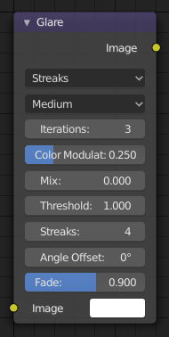

Glare Node¶

Glare Node.
The Glare node is used to add lens flares, fog, glows around exposed parts of an image and much more.
Inputs¶
- Image
- Standard image input.
Properties¶
Glare Type¶
- Ghosts
- Creates a haze over the image.
- Streaks
Creates bright streaks used to simulate lens flares.
- Streaks
- Total number of streaks.
- Angle Offset
- The rotation offset factor of the streaks.
- Fade
- Fade out factor for the streaks.
- Fog Glow
Looks similar to Ghost. However, it is much smaller in size and gives more of an atmospheric haze or “glow” around the image.
- Size
- Scale of the glow relative to the size of the original bright pixels.
- Simple Star
Works similar to Streaks but gives a simpler shape looking like a star.
- Fade
- Fade out factor for the streaks.
- Rotate 45
- Rotate the streaks by 45°.
Common Options¶
- Quality
- If not set to something other the High, then the glare effect will only be applied to a low resolution copy of the image. This can be helpful to save render times while only doing preview renders.
- Iterations
- The number of times to run through the filter algorithm. Higher values will give more accurate results but will take longer to compute. Note that, this is not available for Fog Glow as it does not use an iterative-based algorithm.
- Color Modulation
Used for Streaks and Ghosts to create a special dispersion effect.
Johannes Itten describes this effect, Color Modulation, as subtle variations in tones and chroma.
- Mix
- Value to control how much of the effect is added on to the image. A value of -1 would give just the original image, 0 gives a 50/50 mix, and 1 gives just the effect.
- Threshold
- Pixels brighter than this value will be affected by the glare filter.
Outputs¶
- Image
- Standard image output.